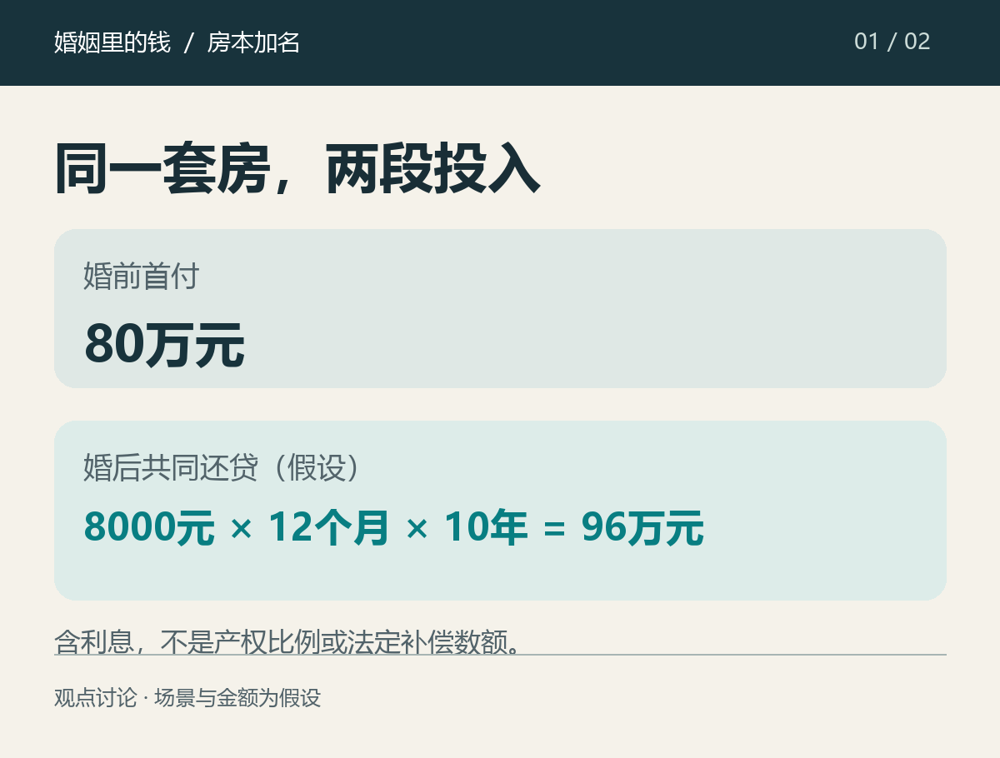

“首付是我家出的，凭什么加你的名字？”
“以后每个月一起还贷，为什么我连份额都不能问？”
这两句话，并排放着都能听懂。真落到同一段关系里，却很容易只剩一句：你是不是在算计我？
先把场景说清：下面是假设讨论，不是真实投稿，也不对应具体当事人。一方婚前买房，首付80万元，房子登记在其名下；婚后计划用共同财产每月还贷8000元，持续十年，累计还款96万元。96万元是包含利息的还款总额，不能直接折算为产权比例，也不代表离婚时的补偿数额。

80万元可能是一个人多年的积蓄，也可能包含父母的支持。买房时承担的风险、已经支付的成本，都发生在结婚之前。要求对方一结婚就接受整套房一半归自己，出资方有顾虑，可以理解。
尤其父母提供了资金时，钱究竟是借款、赠与谁、有没有明确约定，要回到实际材料。把所有家庭放进同一个“首付都是父母给的”故事里，谈不出可靠的结果。
愿意结婚，并不等于一个人必须用转让婚前资产来证明感情。婚前投入值得被认真对待。
共同还贷的一方同样可以问：如果家庭收入长期投进这套房，我的承担怎么确认？
每个月8000元，不会只在银行账单上留下一个数字。家庭少了可以另存、投资或用于其他计划的钱。提出加名，也可能只是想把这笔长期投入谈清楚。不能一听到“名字”两个字，就默认对方想拿走婚前的一半。
如果不愿意加名，愿不愿意讨论其他安排？对共同还贷、房屋份额或补偿，愿不愿意在专业协助下写清楚？这些问题，比一句“你还不相信我”更能让人判断自己的处境。
我不认为所有婚前房都必须加名。但如果希望伴侣一起承担十年、二十年的支出，就不该拒绝讨论对方的权益。
“没有名字，还多少也白还”，说得过头。最高人民法院婚姻家庭编解释（一）第七十八条，针对一方婚前签约、以个人财产付首付并贷款、婚后用共同财产还贷、登记在首付方名下的情形，规定离婚时先由双方协议处理；无法达成协议时，法院可以判房屋归登记方，未还贷款为登记方个人债务，对婚后共同还贷及相应财产增值部分，由登记方按法定原则向另一方补偿。
这条规则有适用条件，也不能简化成把所有月供原样退一半。款项来源、还贷记录、相关约定等材料，都会影响具体判断。
“加个名字，离婚就能拿一半”，也不能当成通用答案。2025年施行的婚姻家庭编解释（二）第五条，对夫妻间房屋给予、已经变更登记后发生的离婚争议，区分了情况。例如，房屋已经转移登记，离婚时归属或分割有争议且协商不成，婚姻持续时间较短且给予方无重大过错的，法院可以依诉讼请求判房屋归给予方，再结合共同生活、子女、过错、贡献和房屋价值等因素确定是否补偿及数额。不能跳过适用条件，直接把加名等同于固定分半。
讨论该不该加名，可以有立场；给陌生人的房子报一个必然分割比例，则需要具体材料。
还有一种假设安排：一人的工资还房贷，另一人的工资付生活费。年底一看，银行还款记录只显示一个名字，另一方的收入却同样没剩下多少。
不能只凭扣款账户，就断定谁在独自承担家庭。按《民法典》第一千零六十二条，婚后工资等通常属于夫妻共同财产；第一千零六十五条同时允许双方以书面形式约定有关财产归属。存在有效约定或其他特殊情况时，应另外分析。
所以，“我用自己工资还的”这句话，往往还没有把财产性质讲完。两个人的收入如何安排、谁付日常开支，都应该放到同一张家庭账里看。
出资方可以提出保留婚前投入，共同还贷方也可以提出确认婚后承担。双方可以讨论共有及份额，也可以在不改原登记的情况下，就还贷相关权益作出清楚、可落实的书面安排。涉及贷款和登记的具体操作，还需要向贷款银行、不动产登记机构和专业人士核实。
如果双方婚前各有一套房，问题也不会自动消失。婚后是各自还、共同收入还，还是先集中还其中一套？哪套供居住、哪套出租？讨论加名时，两套房的资金安排都该摆上桌，规则也应对双方适用。
我能理解有人不愿把婚前资产直接分出去，也能理解有人不愿长期投入却只得到口头承诺。婚前的钱值得尊重，婚后共同承担的钱同样值得确认。
假如你是出首付的人，你愿意怎样保障共同还贷的一方？假如你是共同还贷的人，清楚的书面安排能否替代加名？
本文为观点讨论，人物、金额与安排均为假设。法律信息按截至2026年11月6日查阅的公开条文概述，不代替针对具体材料的专业意见。依据：《民法典》第一千零六十二条、第一千零六十五条；最高人民法院婚姻家庭编解释（一）第七十八条、解释（二）第五条。配图原创绘制，内容经AI辅助整理与核对。
官方条文链接：
最高人民法院关于适用《中华人民共和国民法典》婚姻家庭编的解释（一）：https://www.court.gov.cn/fabu/xiangqing/282071.html
最高法发布适用民法典婚姻家庭编的解释（二）（含全文）：https://www.court.gov.cn/zixun/xiangqing/452771.html
中华人民共和国民法典（最高人民法院公开全文）：https://www.court.gov.cn/zixun/xiangqing/233181.html